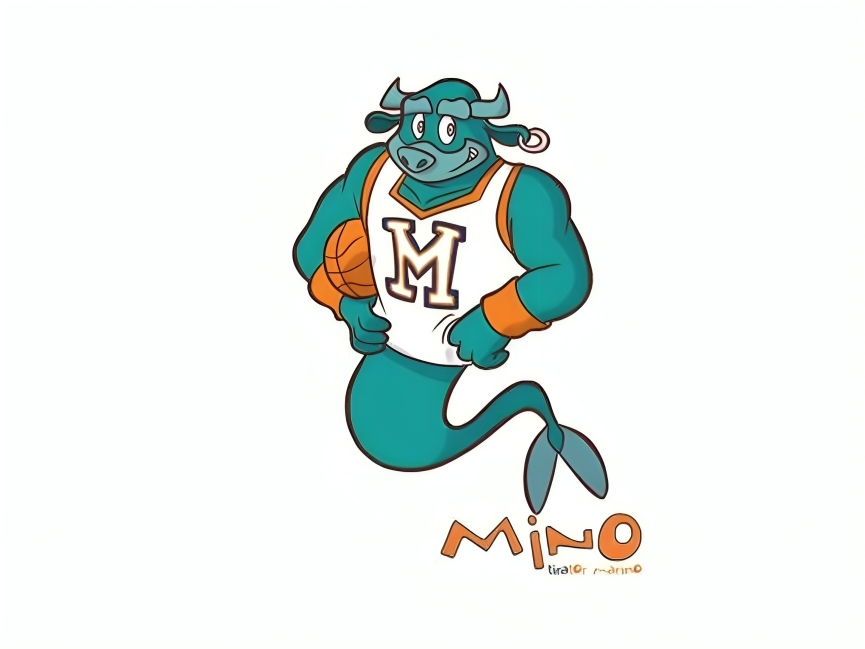

<!DOCTYPE html>
<html lang="it">
<head>
    <meta charset="UTF-8">
    <meta name="viewport" content="width=device-width, initial-scale=1.0">
    <title>Footer GS Minori</title>
    <style>
    @import url('https://cdnjs.cloudflare.com/ajax/libs/font-awesome/6.4.2/css/all.min.css');
    body {
        margin: 0;
        padding: 0;
        font-family: Arial, sans-serif;
        background-color: #f4f4f4;
    }
    
    footer {
        margin-top: 50px; /* Aggiunto per evitare la sovrapposizione con il contenuto */
        background-color: #0D1459; /* Fix del colore */
        color: white;
        text-align: center;
        padding: 50px 0;
        width: 100%; /* Assicura che il footer occupi l'intera larghezza */
        box-sizing: border-box; /* Include padding e border nella larghezza */
    }
    
    .footer-container {
        display: flex;
        justify-content: space-between;
        align-items: center;
        max-width: 900px;
        margin: 0 auto;
        padding: 20px;
    }
    
    .hashtags span {
        font-size: 1.5rem;
        font-weight: bold;
    }
    
    .logo-container {
        display: flex;
        justify-content: center;
        align-items: center;
        margin-top: -140px; /* Solleva il logo, ma evita che voli troppo in alto */
    }
    
    .logo-container img {
        height: 125px; /* Riduci la dimensione se necessario */
        max-width: 150px;
        width: auto;
    }
    
    .social-media {
        margin-top: 20px;
    }
    
    .social-media p {
        font-size: 1.2rem;
        font-weight: bold;
    }
    
    .icons {
        display: flex;
        justify-content: center;
        gap: 15px;
        margin-top: 10px;
    }
    
    .icons a {
        color: white;
        font-size: 1.8rem;
        transition: transform 0.3s ease;
    }
    
    .icons a:hover {
        transform: scale(1.2);
    }

    /* Copyright e Sponsor */
    .bottom-footer {
        display: flex;
        justify-content: space-between;
        align-items: center;
        max-width: 900px;
        margin: 10px auto; /* Centra il contenuto */
        font-size: 0.9rem;
        width: 100%; /* Assicura che il contenitore occupi l'intera larghezza */
        box-sizing: border-box; /* Include padding e border nella larghezza */
    }

    .copyright {
        float: left;
        padding-top: 20px;
        padding-left: 10px;
    }

    .sponsors {
        float: right;
    }

    .sponsors img {
        height: 40px;
        margin-left: 15px;
        margin-right: 5px;
    }
    
    /* Responsive */
    @media (max-width: 768px) {
        .footer-container {
            flex-direction: column;
            gap: 10px;
        }
    
        .logo-container img {
            height: 60px;
        }
    
        .hashtags span {
            font-size: 1.2rem;
        }

        .bottom-footer {
            flex-direction: column;
            align-items: center;
            text-align: center;
        }

        .copyright, .sponsors {
            float: none;
            padding: 10px 0;
        }
    }
    </style>
</head>
<body>
<footer>
    <div class="footer-container">
        <div class="hashtags">
            <span>#GSMINORIGOO</span>
        </div>
        <div class="logo-container">
            
        </div>
        <div class="hashtags">
            <span>#SEMPREGSMINORI</span>
        </div>
    </div>
    <div class="social-media">
        <p>GS MINORI SUI SOCIAL MEDIA</p>
        <div class="icons">
            <a href="#"><i class="fab fa-twitch"></i></a>
            <a href="https://www.facebook.com/g.s.minori.costadamalfi.1"><i class="fab fa-facebook"></i></a>
            <a href="https://www.instagram.com/gs.minori/"><i class="fab fa-instagram"></i></a>
            <a href="#"><i class="fab fa-linkedin"></i></a>
            <a href="#"><i class="fab fa-tiktok"></i></a>
            <a href="#"><i class="fab fa-youtube"></i></a>
            <a href="#"><i class="fab fa-x-twitter"></i></a>
            <a href="#"><i class="fab fa-whatsapp"></i></a>
            <a href="#"><i class="fas fa-music"></i></a>
        </div>
    </div>
    <div class="bottom-footer">
        <div class="copyright">
            ©2025 G.S. Minori - Tutti i diritti riservati.
        </div>
        <div class="sponsors">
            <strong>SPONSOR</strong>
            <a href="https://nike.com/" class="nike-photo" target="_blank"></a>
            <a href="https://jordan.com/" class="jordan-photo" target="_blank"></a>
            <a href="https://errea.com/" class="errea-photo" target="_blank"></a>
        </div>
    </div>
</footer>
</body>
</html>